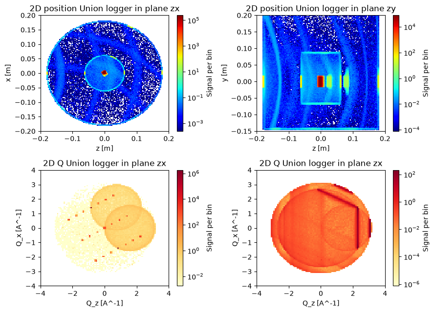
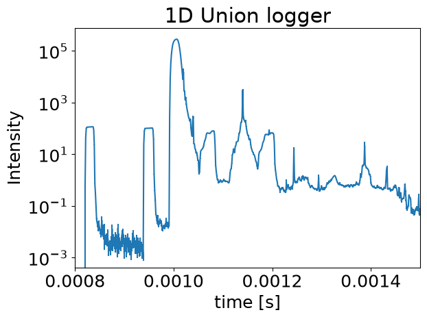
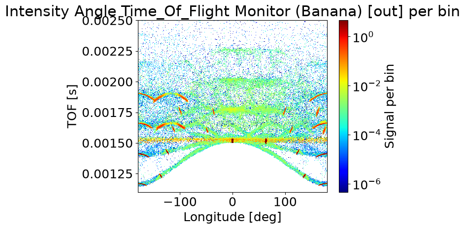
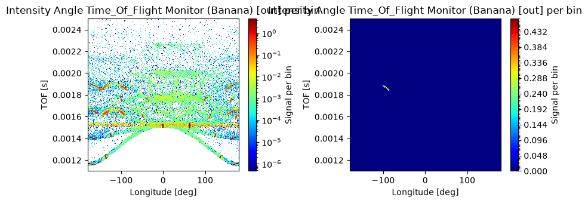
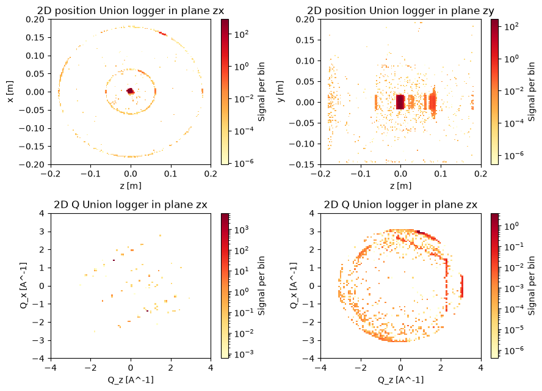
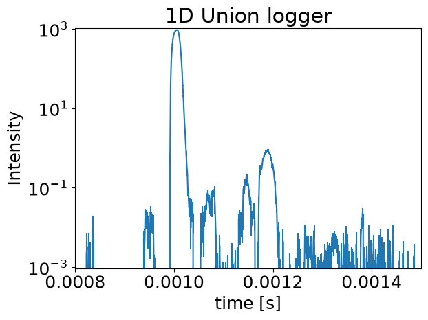
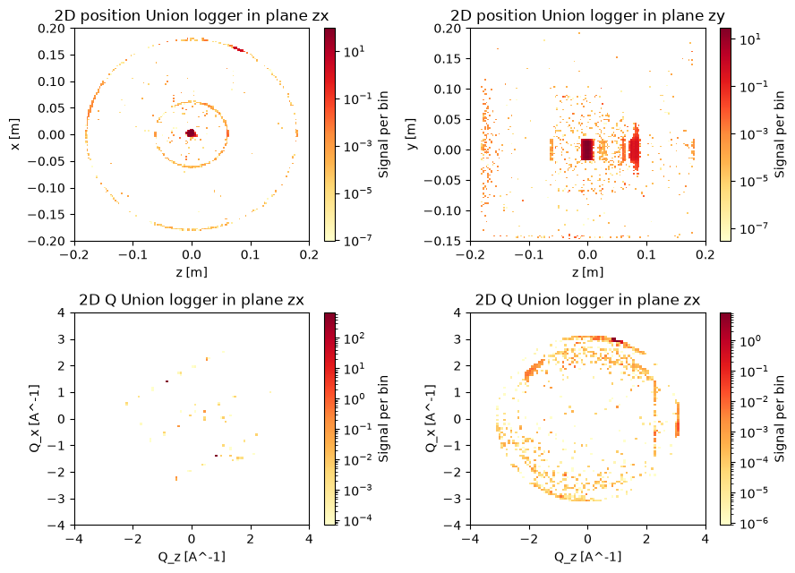
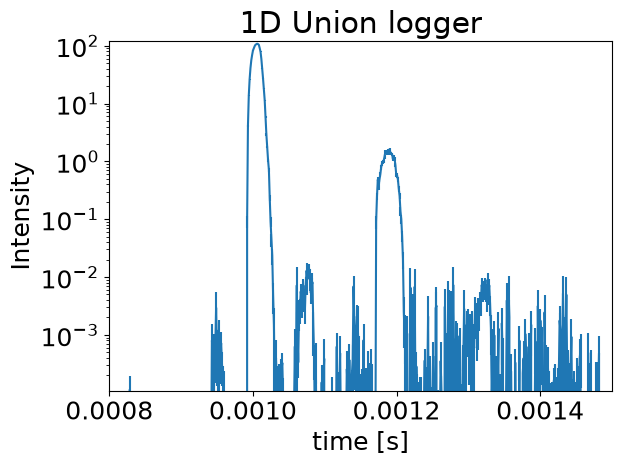
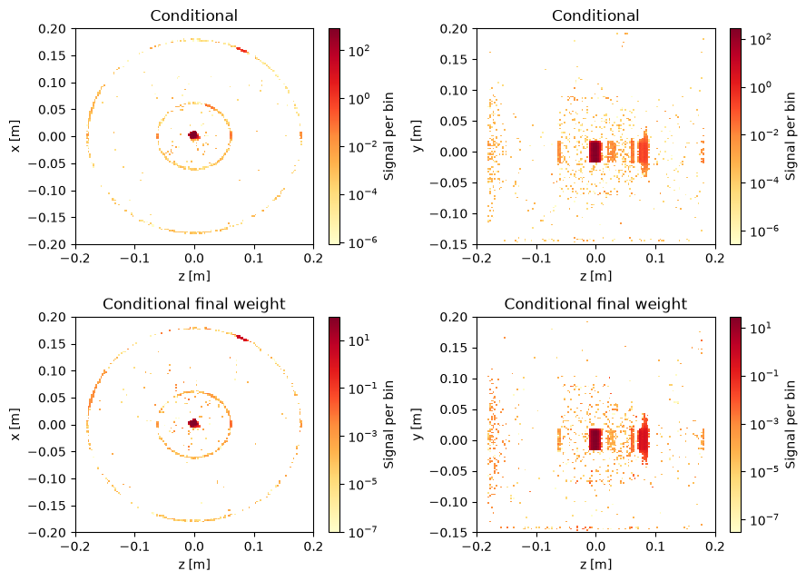

Using conditional component to modify loggers#
Even with the results from the loggers, it can still be difficult to explain all the features in the resulting scattering pattern. The conditional components can modify a logger so that it only records events when the final state of the neutron satisfy some condition. The condition could be leaving with a certain energy or in a specified direction. Before demonstrating these conditional components, we will set up an interesting sample and sample environment, including a few loggers and a time of flight 2theta detector.
Set up an example instrument#
First an example instrument is made, again with a cryostat but this time with a box shaped single crystal of YBaCuO. Since the single_crystal_process have quite a few parameters, we use the set_parameters method that allows setting parameters using a dictionary.
import mcstasscript as ms
instrument = ms.McStas_instr("python_tutorial", input_path="run_folder")
if instrument.mccode_version == 3:
init = instrument.add_component("init", "Union_init") # This component has to be called init
# Set up Al material with incoherent and powder
Al_incoherent = instrument.add_component("Al_incoherent", "Incoherent_process")
Al_incoherent.sigma = "4*0.0082"
Al_incoherent.packing_factor = 1
Al_incoherent.unit_cell_volume = 66.4
Al_powder = instrument.add_component("Al_powder", "Powder_process")
Al_powder.reflections = "\"Al.laz\""
Al = instrument.add_component("Al", "Union_make_material")
Al.process_string = '"Al_incoherent,Al_powder"'
Al.my_absorption = "100*4*0.231/66.4"
# Set up YBaCuO with incoherent and single crystal
YBaCuO_incoherent = instrument.add_component("YBaCuO_incoherent", "Incoherent_process")
YBaCuO_incoherent.sigma = 2.105
YBaCuO_incoherent.unit_cell_volume = 173.28
YBaCuO_crystal = instrument.add_component("YBaCuO_crystal", "Single_crystal_process")
YBaCuO_crystal.set_parameters(
{"ax" : 3.816, "ay" : 0, "az" : 0,
"bx" : 0, "by" : 3.886, "bz" : 0,
"cx" : 0, "cy" : 0, "cz" : 11.677,
"delta_d_d" : 5E-4, "mosaic" : 30, "barns" : 1,
"reflections" : '"YBaCuO.lau"'})
YBaCuO = instrument.add_component("YBaCuO", "Union_make_material")
YBaCuO.process_string = '"YBaCuO_incoherent,YBaCuO_crystal"'
YBaCuO.my_absorption = 100*14.82/173.28
src = instrument.add_component("source", "Source_div")
src.xwidth = 0.01
src.yheight = 0.035
src.focus_aw = 0.01
src.focus_ah = 0.01
src.lambda0 = instrument.add_parameter("wavelength", value=5.0,
comment="Wavelength in [Ang]")
src.dlambda = "0.01*wavelength"
src.flux = 1E13
# At a reference point to build the cryostat around
cryostat_center = instrument.add_component("cryostat_center", "Arm")
cryostat_center.set_AT([0, 0, 1], RELATIVE=src)
# Parameter for controlling sample rotation
A3_angle = instrument.add_parameter("A3_angle", value=0)
sample = instrument.add_component("sample", "Union_box")
sample.set_AT([0, 0, 0], RELATIVE=cryostat_center)
sample.set_ROTATED([0, A3_angle, 0], RELATIVE=cryostat_center)
sample.xwidth = 0.015
sample.yheight = 0.032
sample.zdepth = 0.012
sample.material_string = '"YBaCuO"'
sample.priority = 200
# Setting up two layers of cryostat
inner_cryostat_wall = instrument.add_component("inner_cryostat_wall", "Union_cylinder")
inner_cryostat_wall.material_string = "\"Al\""
inner_cryostat_wall.priority = 12
inner_cryostat_wall.radius = 0.0621
inner_cryostat_wall.yheight = 0.16
inner_cryostat_wall.p_interact = 0.20
inner_cryostat_wall.set_AT([0, 0.01, 0], RELATIVE=cryostat_center)
inner_cryostat_vacuum = instrument.add_component("inner_cryostat_vacuum", "Union_cylinder")
inner_cryostat_vacuum.material_string = "\"Vacuum\""
inner_cryostat_vacuum.priority = 13
inner_cryostat_vacuum.radius = 0.06
inner_cryostat_vacuum.yheight = 0.15
inner_cryostat_vacuum.set_AT([0, 0.01, 0], RELATIVE=cryostat_center)
outer_cryostat_wall = instrument.add_component("outer_cryostat_wall", "Union_cylinder")
outer_cryostat_wall.material_string = "\"Al\""
outer_cryostat_wall.priority = 10
outer_cryostat_wall.radius = 0.180
outer_cryostat_wall.yheight = 0.355
outer_cryostat_wall.p_interact = 0.20
outer_cryostat_wall.set_AT([0, 0.032, 0], RELATIVE=cryostat_center)
outer_cryostat_vacuum = instrument.add_component("outer_cryostat_vacuum", "Union_cylinder")
outer_cryostat_vacuum.material_string = "\"Vacuum\""
outer_cryostat_vacuum.priority = 11
outer_cryostat_vacuum.radius = 0.178
outer_cryostat_vacuum.yheight = 0.355
outer_cryostat_vacuum.set_AT([0, 0.037, 0], RELATIVE=cryostat_center)
# Set up loggers
logger_space_zx = instrument.add_component("logger_space_zx", "Union_logger_2D_space")
logger_space_zx.n1 = 150
logger_space_zx.n2 = 150
logger_space_zx.D1_min = -0.2
logger_space_zx.D1_max = 0.2
logger_space_zx.D2_min = -0.2
logger_space_zx.D2_max = 0.2
logger_space_zx.D_direction_1 = '"z"'
logger_space_zx.D_direction_2 = '"x"'
logger_space_zx.filename = '"logger_zx.dat"'
logger_space_zx.logger_conditional_extend_index = 1
logger_space_zx.set_AT([0, 0, 0], RELATIVE=cryostat_center)
logger_space_zy = instrument.add_component("logger_space_zy", "Union_logger_2D_space")
logger_space_zy.n1 = 150
logger_space_zy.n2 = 150
logger_space_zy.D1_min = -0.2
logger_space_zy.D1_max = 0.2
logger_space_zy.D2_min = -0.15
logger_space_zy.D2_max = 0.2
logger_space_zy.D_direction_1 = '"z"'
logger_space_zy.D_direction_2 = '"y"'
logger_space_zy.filename = '"logger_zy.dat"'
logger_space_zy.logger_conditional_extend_index = 1
logger_space_zy.set_AT([0, 0, 0], RELATIVE=cryostat_center)
logger_2DQ = instrument.add_component("logger_2DQ_sample", "Union_logger_2DQ")
logger_2DQ.Q_direction_1 = '"z"'
logger_2DQ.Q1_min = -4.0
logger_2DQ.Q1_max = 4.0
logger_2DQ.n1 = 100
logger_2DQ.Q_direction_2 = '"x"'
logger_2DQ.Q2_min = -4.0
logger_2DQ.Q2_max = 4.0
logger_2DQ.n2 = 100
logger_2DQ.target_geometry = '"sample"'
logger_2DQ.filename = '"logger_2DQ_sample.dat"'
logger_2DQ = instrument.add_component("logger_2DQ_environment", "Union_logger_2DQ")
logger_2DQ.Q_direction_1 = '"z"'
logger_2DQ.Q1_min = -4.0
logger_2DQ.Q1_max = 4.0
logger_2DQ.n1 = 100
logger_2DQ.Q_direction_2 = '"x"'
logger_2DQ.Q2_min = -4.0
logger_2DQ.Q2_max = 4.0
logger_2DQ.n2 = 100
logger_2DQ.target_geometry = '"inner_cryostat_wall,outer_cryostat_wall"'
logger_2DQ.filename = '"logger_2DQ_all.dat"'
logger_time_all = instrument.add_component("logger_time_all", "Union_logger_1D")
logger_time_all.n1 = 600
logger_time_all.min_value = 0.0008
logger_time_all.max_value = 0.0015
logger_time_all.filename = '"scattering_time.dat"'
master = instrument.add_component("master", "Union_master")
# Adding a banana - tof detector
banana_detector = instrument.add_component("banana_detector", "Monitor_nD")
banana_detector.set_RELATIVE(cryostat_center)
banana_detector.xwidth = 1
banana_detector.yheight = 0.2
banana_detector.restore_neutron = 1
options = '"banana, theta limits=[-180,180] bins=361, t limits=[0.0011 0.0025] bins=500"'
banana_detector.options = options
banana_detector.filename = '"tof_b.dat"'
if instrument.mccode_version == 3:
instrument.add_component("stop", "Union_stop")
Calculating theta#
Our YBaCuO sample has the 010 axis along the z axis and have 010 allowed with d = 3.8843. Here we calculate the necessary rotation of the crystal for satisfying the Bragg condition. This could also be done within the initialize section of the McStas instrument, but here we wish to preserve control over the A3_angle.
import math
wavelength = 4.0
theta = 180/3.14159*math.asin(wavelength/2.0/3.8843)
print(theta)
30.99034867589204
instrument.set_parameters(wavelength=wavelength, A3_angle=theta)
instrument.settings(ncount=3E6, output_path="data_folder/union_conditionals")
data = instrument.backengine()
INFO: Using directory: "/home/runner/work/McStasScript/McStasScript/docs/source/tutorial/data_folder/union_conditionals"
INFO: Regenerating c-file: python_tutorial.c
CFLAGS= -DFUNNEL
WARNING:
The parameter format of Al_powder is initialized
using a static {,,,} vector.
-> Such static vectors support literal numbers ONLY.
-> Any vector use of variables or defines must happen via a
DECLARE/INITIALIZE pointer.
WARNING:
The parameter mosaic_AB of YBaCuO_crystal is initialized
using a static {,,,} vector.
-> Such static vectors support literal numbers ONLY.
-> Any vector use of variables or defines must happen via a
DECLARE/INITIALIZE pointer.
-----------------------------------------------------------
Generating single GPU kernel or single CPU section layout:
-----------------------------------------------------------
Generating GPU/CPU -DFUNNEL layout:
Component master is NOACC, CPUONLY=1
-> FUNNEL mode enabled, SPLIT within buffer.
-> CPU section from component master
-> GPU kernel from component banana_detector
-----------------------------------------------------------
INFO: Recompiling: ./python_tutorial.out
lto-wrapper: warning: using serial compilation of 7 LTRANS jobs
lto-wrapper: note: see the '-flto' option documentation for more information
INFO: ===
Opening input file '/home/runner/micromamba/envs/mcstasscript-docs/share/mcstas/resources/data/Al.laz' (Table_Read_Offset)
Table from file 'Al.laz' (block 1) is 26 x 18 (x=1:8), constant step. interpolation: linear
'# TITLE *Aluminum-Al-[FM3-M] Miller, H.P.jr.;DuMond, J.W.M.[1942] at 298 K; ...'
PowderN: Al_powder: Reading 26 rows from Al.laz
PowderN: Al_powder: Read 26 reflections from file 'Al.laz'
PowderN: Al_powder: Vc=66.4 [Angs] sigma_abs=0.924 [barn] sigma_inc=0.0328 [barn] reflections=Al.laz
Opening input file '/home/runner/micromamba/envs/mcstasscript-docs/share/mcstas/resources/data/YBaCuO.lau' (Table_Read_Offset)
Single_crystal: YBaCuO.lau structure a=[3.816,0,0] b=[0,3.886,0] c=[0,0,11.677] V0=173.158
Single_crystal_process: YBaCuO_crystal: Read 62 reflections from file 'YBaCuO.lau'
Single_crystal: YBaCuO_crystal: Vc=173.158 [Angs] sigma_abs=14.82 [barn] sigma_inc=2.105 [barn] reflections=YBaCuO.lau
Union_master component master initialized sucessfully
*** TRACE end ***
Detector: logger_space_zx_I=3.59041e+06 logger_space_zx_ERR=5469.65 logger_space_zx_N=1.06359e+08 "logger_zx.dat"
Detector: logger_space_zy_I=3.59041e+06 logger_space_zy_ERR=5469.65 logger_space_zy_N=1.06356e+08 "logger_zy.dat"
Detector: logger_2DQ_sample_I=3.58435e+06 logger_2DQ_sample_ERR=5469.64 logger_2DQ_sample_N=1.03622e+08 "logger_2DQ_sample.dat"
Detector: logger_2DQ_environment_I=6052.79 logger_2DQ_environment_ERR=4.60351 logger_2DQ_environment_N=2.73663e+06 "logger_2DQ_all.dat"
Detector: logger_time_all_I=3.59038e+06 logger_time_all_ERR=5469.65 logger_time_all_N=1.06244e+08 "scattering_time.dat"
Detector: banana_detector_I=63474.9 banana_detector_ERR=57.765 banana_detector_N=1.79132e+06 "tof_b.dat"
INFO: Placing instr file copy python_tutorial.instr in dataset /home/runner/work/McStasScript/McStasScript/docs/source/tutorial/data_folder/union_conditionals
INFO: Placing generated c-code copy python_tutorial.c in dataset /home/runner/work/McStasScript/McStasScript/docs/source/tutorial/data_folder/union_conditionals
logger_zx = ms.name_search("logger_space_zx", data)
logger_zx.set_plot_options(log=True, orders_of_mag=9, colormap="jet")
logger_zy = ms.name_search("logger_space_zy", data)
logger_zy.set_plot_options(log=True, orders_of_mag=9, colormap="jet")
logger_2DQ_sample = ms.name_search("logger_2DQ_sample", data)
logger_2DQ_sample.set_plot_options(log=True, orders_of_mag=9, colormap="YlOrRd")
logger_2DQ_env = ms.name_search("logger_2DQ_environment", data)
logger_2DQ_env.set_plot_options(log=True, orders_of_mag=9, colormap="YlOrRd")
ms.make_sub_plot([logger_zx, logger_zy, logger_2DQ_sample, logger_2DQ_env], fontsize=10)
time = ms.name_search("logger_time_all", data)
time.set_plot_options(log=True)
ms.make_sub_plot([time], fontsize=18)
banana = ms.name_search("banana_detector", data)
banana.set_plot_options(log=True, orders_of_mag=7, cut_max=0.001)
ms.make_sub_plot([banana], fontsize=18)



Interpretation of the data#
The data from the two spatial loggers show scattering location within the cryostat, and we see one beam entering the cryostat, yet two beams leaving as we satisfy the Bragg condition for the sample. This also result in scattering from when the scattered beam intersect the sample environment.
We have two 2DQ loggers recording the scattering vector, one just for the sample and one for the sample environment. On the sample monitor we see that many Bragg peaks scatter some intensity, but 010 and 0-10 have the most intensity, they are at [0.9, -1.5] and [1.5, -0.9]. The two circles are incoherent scattering from the two most common wavevectors, the initial beam and the beam scattered from 010. On the 2DQ logger for the sample environment, we mainly see the Debye-Scherrer cones as lines within the circles defined by the two predominant wavevectors. It seems the used wavelength allows two different Bragg conditions to be met in the aluminium.
The time logger shows a surprising amount of complexity. The 5 peaks from entering and exiting two layers and intersecting the sample are clear, but all structure after 0.0012 is a surprise. There is also an unexpected peak at 0.00115, this may be the scattered beam intersecting the outer layer of the cryostat, this happens a bit sooner than the direct beam because the path is shorter when scattered from the front of the sample.
The time of flight vs 2theta monitor also has a large amount of complexity that is not simple to explain. The bright spot at [0, 0.00155] is the direct beam, while the spot at [60, 0.00155] is the scattered beam. The horizontal line at t=0.00155 must be incoherent scattering from the sample, as it must have had the same distance to all points on the detector. The curved lower branch could be incoherent scattering from where the beam enters the cryostat, as that is closest to the 180 deg point on the detector. The remaining hot spots are all some Debye Scherrer cones from a beam entering or exiting the sample environment, and the more blurry spots may be of even higher order.
Conditional components#
We can use conditional components to investigate peaks in the final scattering pattern, by limiting the loggers to only recording events that for example end in a certain spot. Currently there are two available
Union_conditional_standard
Union_conditional_PSD
The standard version allows limits for energy, time and number of scattering events for the neutron when it exits the Union_master simulation, in this case when it leaves the sample environment.
The PSD version propagates the final neutron states to a given rectangular surface and it is possible to filter the logger events on the neutron state when it reaches this surface, and ignores all events that misses. This is what we will use here to investigate a peak in the scattering pattern. We also set a time limit as our detector is time of flight sensitive.
Here are the important parameters for the Union_conditional_PSD component
target_loggers : comma separated string of logger names this conditional should affect
xwidth : width of rectangle
yheight : height of rectangle
time_min : lower time limit for condition
time_max : upper time limit for condition
overwrite_logger_weight : If set to 1, will weight logger results with the final ray weight
# Set up instrument parameters describing what spot to investigate
instrument.add_parameter("tag_angle", value=-95)
instrument.add_parameter("tag_time", value=0.00188)
instrument.add_parameter("tag_interval", value=9E-5)
# Set up an arm pointing to the relevant spot
spot_dir = instrument.add_component("spot_dir", "Arm",
RELATIVE=cryostat_center, before="master")
spot_dir.set_ROTATED([0, "tag_angle", 0], RELATIVE=cryostat_center)
# Set up a conditional component targeting all our loggers
PSD_conditional = instrument.add_component("space_all_PSD_conditional", "Union_conditional_PSD",
before="master")
loggers = '"logger_space_zx,logger_space_zy,logger_time_all,logger_2DQ_sample,logger_2DQ_environment"'
PSD_conditional.target_loggers = loggers
PSD_conditional.xwidth = 0.2
PSD_conditional.yheight = 0.2
PSD_conditional.time_min = "tag_time-0.5*tag_interval"
PSD_conditional.time_max = "tag_time+0.5*tag_interval"
# Ensure the position of the conditional rectangle is on the detector surface
PSD_conditional.set_AT([0, 0, 0.5], RELATIVE=spot_dir)
# Add a monitor with flag that is only active when the condition in the conditional is true
instrument.add_declare_var("int", "flag1")
logger_space_zx.logger_conditional_extend_index = 1
master.append_EXTEND("flag1 = logger_conditional_extend_array[1];")
# Copy of our banana detector, but with WHEN condition to verify we are investigating the right peak
banana_detector = instrument.add_component("banana_detector_limited", "Monitor_nD")
banana_detector.set_RELATIVE(cryostat_center)
banana_detector.xwidth = 1
banana_detector.yheight = 0.2
banana_detector.restore_neutron = 1
options = '"banana, theta limits=[-180,180] bins=361, t limits=[0.0011 0.0025] bins=500"'
banana_detector.options = options
banana_detector.filename = '"tof_b_limited.dat"'
banana_detector.set_WHEN("flag1 > 0")
Run the simulation#
We run the simulation again with a larger ncount, as the loggers now only record a small fraction of the scattered neutrons. You can investigate other areas of interest by changing tag_angle, tag_time and tag_interval to another interesting location on the time of flight detector.
If MPI is installed add mpi=N where N is the number of CPU cores available in your computer to speed up the simulation.
instrument.set_parameters(wavelength=wavelength, A3_angle=theta,
tag_angle=-95, tag_time=0.00188, tag_interval=9E-5)
instrument.settings(ncount=3E6, suppress_output=True, mpi="auto")
data_con = instrument.backengine()
Confirm our conditional is on the desired peak#
First we plot our 2theta / time of flight detector and the version limited to what the conditional records to confirm that we selected an appropriate region to investigate.
banana = ms.name_search("banana_detector", data_con)
banana.set_plot_options(log=True, orders_of_mag=7, cut_max=0.001)
banana_limited = ms.name_search("banana_detector_limited", data_con)
banana_limited.set_plot_options(log=False)
ms.make_sub_plot([banana, banana_limited], fontsize=10)

Plotting the loggers, now limited by the conditional#
We use a different colormap here instead of the standard jet, because in jet the lowest and highest intensity are both dark colors. By choosing a colormap where zero intensity is white, it blends in with white from lack of data which is beneficial in this situation for clearly seeing the hotspots.
logger_zx = ms.name_search("logger_space_zx", data_con)
logger_zx.set_plot_options(log=True, orders_of_mag=9, colormap="YlOrRd")
logger_zy = ms.name_search("logger_space_zy", data_con)
logger_zy.set_plot_options(log=True, orders_of_mag=9, colormap="YlOrRd")
logger_2DQ_sample = ms.name_search("logger_2DQ_sample", data_con)
logger_2DQ_sample.set_plot_options(log=True, orders_of_mag=7, colormap="YlOrRd")
logger_2DQ_env = ms.name_search("logger_2DQ_environment", data_con)
logger_2DQ_env.set_plot_options(log=True, orders_of_mag=7, colormap="YlOrRd")
ms.make_sub_plot([logger_zx, logger_zy, logger_2DQ_sample, logger_2DQ_env], fontsize=10)
time = ms.name_search("logger_time_all", data_con)
time.set_plot_options(log=True, orders_of_mag=6)
ms.make_sub_plot([time], fontsize=18)


Interpreting the data from loggers with conditional#
Now that the loggers only show scattering from neutrons that end in our specific peak of interest, we can explain the origin of this peak. The spatial loggers show that scattering primarily happens in the sample, and in the outer part of the cryostat where the scattered beam leaves the sample environment. It is in this case obvious the first scattering is in the sample, as the exit area is not within the direct beam, but one can create individual loggers for each scattering order in order to confirm this.
On the 2DQ logger for the sample it is clear the scattering is from the main Bragg peak (010 and 0-10). We see two peaks as a ray scattered from a Bragg peak will fulfil the Bragg condition of the opposite reciprocal indices. On the 2DQ logger for the sample environment, we see the brightest spot is a small part of a Debye-Scherrer cone. Scattered neutrons from other parts of this cone will not hit our conditional PSD, some may not even hit the detector at all.
That means this specific peak was an uneven number of single crystal scattering events in 010/0-10 in the sample followed by a powder scattering in the outer wall of the sample environment.
Using the final weight option#
Here we rerun the simulation with the overwrite_logger_weight option in the conditional turned on to see the effect. Without it a ray is recorded in the loggers if it satisfy the conditional, but it does not matter how large the final weight is. For this reason, some rays with high sampling probability to reach the condition but low weight are represented more than is appropriate. This is mainly important when shielding is simulated, as rays that pass through the shielding can be heavily overrepresented.
PSD_conditional.overwrite_logger_weight = 1
data_con_f = instrument.backengine()
logger_zx = ms.name_search("logger_space_zx", data_con_f)
logger_zx.set_plot_options(log=True, orders_of_mag=9, colormap="YlOrRd")
logger_zy = ms.name_search("logger_space_zy", data_con_f)
logger_zy.set_plot_options(log=True, orders_of_mag=9, colormap="YlOrRd")
logger_2DQ_sample = ms.name_search("logger_2DQ_sample", data_con_f)
logger_2DQ_sample.set_plot_options(log=True, orders_of_mag=7, colormap="YlOrRd")
logger_2DQ_env = ms.name_search("logger_2DQ_environment", data_con_f)
logger_2DQ_env.set_plot_options(log=True, orders_of_mag=7, colormap="YlOrRd")
ms.make_sub_plot([logger_zx, logger_zy, logger_2DQ_sample, logger_2DQ_env], fontsize=10)
time = ms.name_search("logger_time_all", data_con_f)
time.set_plot_options(log=True, orders_of_mag=6)
ms.make_sub_plot([time], fontsize=18)


Comparison between normal and overwrite_logger_weight#
Here we make a direct comparison, and see only a slight difference in this case. No shielding is simulated here which would cause a much more clear difference.
logger_zx = ms.name_search("logger_space_zx", data_con)
logger_zx.set_title("Conditional")
logger_zx.set_plot_options(log=True, orders_of_mag=9, colormap="YlOrRd")
logger_zy = ms.name_search("logger_space_zy", data_con)
logger_zy.set_title("Conditional")
logger_zy.set_plot_options(log=True, orders_of_mag=9, colormap="YlOrRd")
logger_zx_f = ms.name_search("logger_space_zx", data_con_f)
logger_zx_f.set_title("Conditional final weight")
logger_zx_f.set_plot_options(log=True, orders_of_mag=9, colormap="YlOrRd")
logger_zy_f = ms.name_search("logger_space_zy", data_con_f)
logger_zy_f.set_title("Conditional final weight")
logger_zy_f.set_plot_options(log=True, orders_of_mag=9, colormap="YlOrRd")
ms.make_sub_plot([logger_zx, logger_zy, logger_zx_f, logger_zy_f], fontsize=10)
